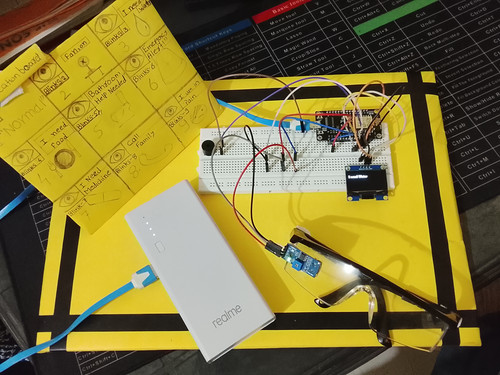

How it works
- IR sensor detects blinks
- Microcontroller sends messages
- Firebase stores and syncs data
- Website displays it in real-time
System Diagram

Real Project Photo
Live Messages
how it works
The IR sensor detects the blink pattern and sends data to NodeMCU. The OLED displays the message accordingly. This same message is also reflected on the website display for demonstration. The system is simple, portable, and effective for real-time patient communication without any voice.
project info
In India, millions of people suffer from severe physical and neurological conditions such as semi-coma, coma, locked-in syndrome (LIS), partial or full paralysis, neurological disorders, post-stroke disabilities, and age-related speech impairments. According to national health data, over 500,000 people are affected by brain strokes every year, with 30–40% of them losing their ability to speak or move properly. Around 250,000 individuals are estimated to be in a semi-comatose or locked-in state. Additionally, more than 10 million elderly people require daily assistance, many of whom struggle to communicate their basic needs. Our communication board-based project can become a lifeline for such individuals — enabling them to express essential needs like “I need water,” “I need a doctor,” or “I am in pain” without speaking. This system not only makes life easier for patients but also provides significant relief to caregivers and families.